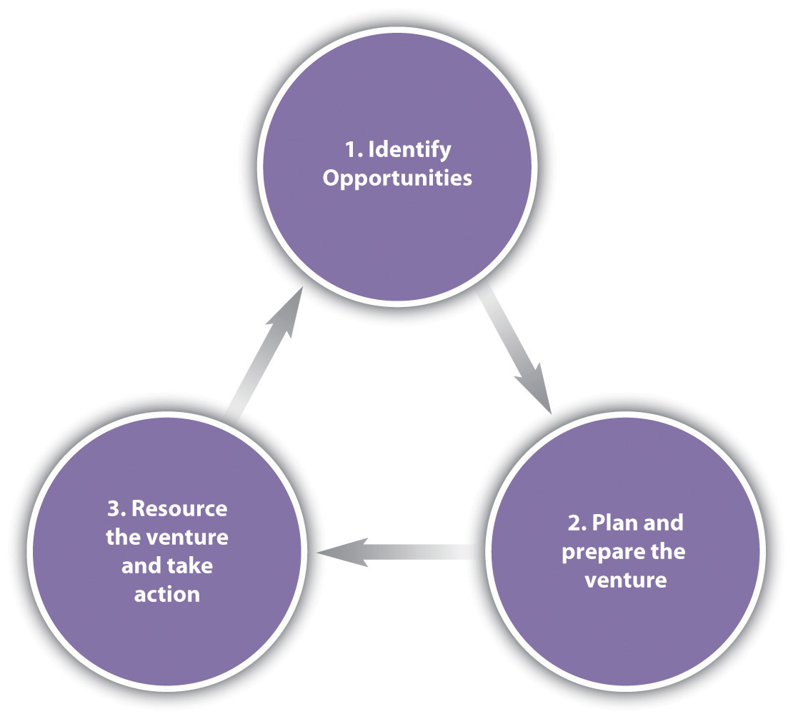

Entrepreneurs build for-profit and nonprofit ventures. The most well-known type of enterpreneurial venture is the for-profit, or commercial, venture, which sells products or services for a profit. Entrepreneurs can also launch a nonprofit venture whose purpose is to fulfill a social mission rather than to make money. For example, nonprofits often work to improve societal issues such as health care, the environment, and underserved populations. Entrepreneurs who launch these kinds of nonprofit ventures are often referred to as social entrepreneurs. Social entrepreneursA person who founds an organization (either for-profit or nonprofit) whose focus is to implement innovative solutions to societal problems. Social entreprenurs aim to create large-scale social change through the ventures they create. look for and implement innovative solutions to societal problems. Social entrepreneurs apply the same tools and skill sets as other entrepreneurs—seizing opportunities, organizing and managing tasks and people, improving how something is done—but their focus is to solve a social problem or create a benefit to humanity.
Entrepreneurial ventures can grow large or stay small, and they can operate at any level: local, national, or international.
Camila Batmanghelidjh
Being an entrepreneur doesn’t mean that the only option open to you is building a successful commercial business. Social entrepreneurs focus on improving people’s lives by giving them new opportunities or resources. In that sense, Camila Batmanghelidjh is a social entrepreneur.
Batmanghelidjh was honored with the United Kingdom’s Social Entrepreneur of the Year award from Ernst & Young (E&Y). She explained what drove her to found one of the United Kingdom’s most remarkable social enterprises:
I founded the Kids Company in 1996 to create a place for children who struggle against relentless deprivation and trauma. Some of these children are homeless; some have parents with drug or alcohol addictions. Some have reached the point of desperation. In some cases, their emotional exhaustion leads to passively suicidal behavior, not caring if they live, die or kill.
All manner of horrors will have been witnessed by these children. One had swallowed her mother’s methadone as a toddler. Three years later, her mother took her to a dealer’s house to collect her fix when a man burst in with a gun and threw the dealer out of a multi-storey window. The older sister of this child, barely an adolescent, was already bringing home money from prostitution.
We now look after around 5,000 children a year. We have in-school therapeutic services [and] after-school homework clubs and offer sheets and blankets for homeless children. We take them to the doctor and to sexual health clinics and support the children if they get into legal trouble. Above all, we encourage their personal and spiritual development using the arts. This is a vocational organization. We will always strive for excellence. Our workers don’t just turn up to a job; they turn up to fulfill a vision.“It’s Not Just Business, It’s Life and Death,” Ernst & Young, accessed December 24, 2010, http://www.ey.com/GL/en/About-us/Entrepreneurship/Entrepreneur-Of-The-Year/Entrepreneur-Of-The-Year---SEOY---Camila-Batmanghelidjh.
There are three essential parts of the entrepreneurial processConsists of (1) identifying entrepreneurial opportunities, (2) planning and preparing the venture, and (3) resourcing the venture and taking action.: (1) opportunity identification, (2) plan and prepare the venture, and (3) resource the venture and take action. Sometimes the process unfolds as depicted in Figure 11.1 "The Entrepreneurial Process", though there are many examples where a formal plan is never put forth, or where a plan and resources lead to the identification of a completely different opportunity. 3M’s Post-it self-adhesive notes or W. L. Gore’s Glide dental floss are examples of the latter scenario.“Inventor of the Week: Robert Gore,” MIT School of Engineering, September 2006, accessed May 5, 2011, http://web.mit.edu/invent/iow/gore.html. However, for simplicity, you’ll look at the process in the common 1-2-3 order of identifying the opportunity, planning the venture, and funding and staffing it.
Figure 11.1 The Entrepreneurial Process
Perhaps the biggest difference between strategy in existing firms and new ventures is the starting point. Most researchers agree that the starting point for new ventures is opportunity, while the strategy for existing firms usually begins with some assessment of the firm’s underlying resources and capabilities.Jonathan T. Eckhardt and Scott A. Shane, “Opportunities and Entrepreneurship,” Journal of Management 29, no. 3 (June 2003): 333–49; Jonathan T. Eckhardt and Scott A. Shane, “The Individual-Opportunity Nexus: A New Perspective on Entrepreneurship,” in Handbook of Entrepreneurship Research: An Interdisciplinary Survey and Introduction, ed. Zoltan J. Acs and David B. Audretsch (Boston: Kluwer, 2003), 161–91.
You might be surprised to learn that you already possess at least two tools that might help you unearth a valuable business opportunity. One way to think about opportunities is through a tool shown in Figure 11.2 "Levers That Lead to Opportunity Identification". The first four levers—eliminate, reduce, create, and raise—are summarized in the Blue Ocean Strategy framework made popular by strategy researchers W. Chan Kim and Renée Mauborgne.W. Chan Kim and Renée Mauborgne, “Blue Ocean Strategy: From Theory to Practice,” California Management Review 47, no. 3 (Spring 2005): 105–21. The fifth characteristic was developed through the work of their colleagues, Mason Carpenter and W. Gerry Sanders, authors of the best-selling textbook Strategic Management: A Dynamic Perspective.Mason Carpenter and William G. Sanders, Strategic Management: A Dynamic Perspective, Concepts and Cases (Upper Saddle River, NJ: Prentice Hall, 2009). The general idea behind the first four changes is that an entrepreneurial opportunity will offer something new but not necessarily because it is simply adding more features or costs. For instance, Amazon became successful because it provided a greater selection of books than any other store on the planet (increase), allowed greater convenience when shopping for books (reduced time needed), developed a logistics and software infrastructure to manage the process (create/add), and threatened to make brick-and-mortar stores obsolete (eliminate).
New markets can be created when innovations are based on these four characteristics alone. However, experience has shown that the more customers need to change their behaviors, the more slowly they will adopt an innovation. For this reason, the fifth characteristic—what stays the same—becomes a differentiating factor between innovations that take hold and those that don’t or do so more slowly. For instance, e-books have taken a long time to gain adoption, even though there are an increasing number of ways for them to be purchased and read. In contrast, Amazon’s strategy of selling printed books through an online store has worked largely because the book—the basic product—remained unchanged and thus required less change on the part of the consumer.
Research suggests that new venture opportunities tend to fall into one of three categories—new-market disruptions, low-end disruptions, or hybrid.
Figure 11.2 Levers That Lead to Opportunity Identification

Mason A. Carpenter, Managing Effectively Through Tough Times (Pearson: Upper Saddle River, NJ: Pearson, 2010).
A disruptive technologyA technology that can make prior technologies obsolete. is a technology that can make prior technologies obsolete. For instance, the automobile was a disruptive technology for the horse-and-buggy; CD players and MP3 players were disruptive technologies for the phonograph, or record player; and the computer was a disruptive technology for the typewriter. Some disruptive technologies appear at the low end of an industry offering and are referred to as low-end disruptionsA disruptive technology that appears at the low end of an industry offering and usually does not lure customers away until it improves and becomes better than the incumbent offering.. Current players tend to ignore such new entrants because they target the least valuable of their customers. These low-end disruptions rarely offer features that satisfy the best customers in the industry. In fact, the new low-end disruptive technologies usually perform worse than the existing technology at first.Clayton Christensen, The Innovator’s Dilemma (New York: HarperBusiness, 2000), xv. For example, early automobiles were less reliable than the horse-and-buggy until improvements made them vastly better. New entrants often use low-end entry to gain a foothold to move into the attractive market once their products or services improve. Indeed, by the time they do improve, these low-end disruptions often satisfy the needs of the center of the market better than incumbents’ products do, because the new entrants have been making incremental improvements to satisfy their best clients’ demands. Southwest Airlines began as a very successful low-end disrupter, satisfying only the most basic travel needs and eliminating many services that had been taken for granted by established airlines. Over time, Southwest’s offerings improved, and its on-time arrival percentage and customer service became the best in the industry. As a result, Southwest Airlines now appeals to more than just low-end customers.
A new-market disruptionA new-market disruption targets noncustomers rather than low-end customers, thus creating a new market that was previously ignored by the dominant players of the existing market. targets noncustomers rather than low-end customers. Thus, the technology creates a new market in a niche that larger players ignored because it was too small or was considered unprofitable with existing technology.
As you might expect, most newcomers adopt some combination of new-market and low-end disruption strategies; these are hybrid-disruption strategiesA combination of new-market and low-end disruption strategies.. Today, it may look as if Amazon has pursued a single-minded, low-end disruption strategy, but along the way, it has also created some new markets, mainly by bringing more buyers into the market for books. Many Amazon customers buy in the quantities they do because of the information that the site makes available. The strategies of such companies as JetBlue, Charles Schwab, and the University of Phoenix are also hybrids of new-market and low-cost disruption strategies.These examples are drawn from an extensive and detailed list provided by Clayton M. Christensen and Michael E. Raynor, The Innovator’s Solution: Creating and Sustaining Successful Growth (Boston: Harvard Business School Press, 2003). JetBlue’s focused, low-cost strategy, for instance, has been able to achieve the lowest cost position in the industry by eliminating many services (a business model it borrowed from Southwest). However, it has also targeted overpriced but underserved markets, thereby stimulating net new demand. Thus, JetBlue has both taken a portion of the existing market and created a new market by attracting consumers who couldn’t ordinarily afford air travel. Schwab is another example; it pioneered discount brokerage as a new market but has since captured many clients from full-service brokers, such as Merrill Lynch. The University of Phoenix is taking a strategic path in higher education much like the one blazed by Schwab in the investment market.
All three of these disruption strategies provide you with a solid basis for identifying market opportunities.
Under all these strategies, an entrepreneur identifies an opportunity and then seeks to cobble together the resources and opportunities to exploit it. Individuals in close contact with scientific breakthroughs can also identify opportunities. In fact, scientific, technological, or process discoveries often inspire people to seek market opportunities. This is one reason why universities are increasing investments to support research faculty in the protection of intellectual property and identification of commercial opportunities. The University of Wisconsin–Madison, for instance, maintains its Office of Corporate Relations, which, among other services, assists individual researchers in the creation of new ventures. After all, faculty and staff members who create early-stage technology are often in the best position to develop it. Not only do they possess unsurpassed technical knowledge about their discoveries, but they’re also in a position to appreciate the promise that they hold.
In order to secure start-up financing and launch the new product, many entrepreneurs draw up a formal business planA formal statement of a set of business goals, the reasons why they are believed attainable, and the plan for reaching those goals; it may also contain background information about the organization or team attempting to reach those goals. that brings all the elements of the new venture together for a specific purpose—namely, to ensure key stakeholders that the firm has a well-considered strategy and managerial expertise. A business plan is a formal statement of business goals, the reasons why they are attainable, and the plan for reaching those goals. It may also contain background information about the organization or team attempting to reach the goals. Even if such a plan isn’t necessary for communicating with external stakeholders, preparing one is still a good idea. At the very least, it will help you reexamine the five elements of your strategy and prompt you to look for ways to bring them together in order to create a viable and profitable firm. In addition, a business plan provides a vehicle for sharing your goals and objectives—and your plans for implementing them—with members of your entrepreneurial team. Focusing on the staging component of the five elements of strategy, for example, is a good way to set milestones and timelines and otherwise manage the scale and pace of your company’s growth. Finally, when it does come time to seek external funding to support the firm’s growth, the plan provides a solid basis for engaging professionals who can both help you get financing and advise you on strengthening customer relationships and finding strategic suppliers.
Familiarity with the five elements of strategy, implementation levers, and frameworks for analyzing external organizational context can prepare you to draw up a business plan. Although there are variations on form, the content of most plans covers the same topics. You can find a multitude of examples on the web in addition to software packages for creating a detailed and professional-looking document.See, for example, Business Plans website, accessed November 1, 2010, http://www.bplans.com; U.S. Small Business Administration website, accessed November 1, 2010, http://www.sba.gov/category/navigation-structure/starting-managing-business/starting-business/writing-business-plan; More Business website, accessed November 1, 2010, http://www.morebusiness.com; Center for Business Planning website, accessed November 1, 2010, http://www.businessplans.org. For more information, see the sidebar below for a summary of what is normally contained in a comprehensive business plan.
Finally, a word of warning: All too often, would-be entrepreneurs tend to equate a good business plan with the probability of success in running a business. Needless to say, however, a well-crafted plan doesn’t ensure a successful business. At this point in the process, your probability of success depends more heavily on the strength of the three elements with which you started the process—a good opportunity (including the right timing), the right entrepreneurial team, and the necessary resources and capabilities. A business plan is no substitute for strategy and strong execution. That’s why consultants often suggest that entrepreneurs think of the business plan not only as a helpful and necessary starting point but also as a continuous work in progress.Jeffry A. Timmons, New Venture Creation: Entrepreneurship for the 21st Century, 5th ed. (New York: McGraw-Hill, 1999).
There is no litmus test for determining the characteristics of successful entrepreneurs or those people who make the best members of an entrepreneurial team. However, without them, a new venture will never get off the ground. Sometimes, as you might imagine, key people are among the intangible resources and capabilities that distinguish the potential new venture as an opportunity, rather than just another good idea. As a practical matter, it’s the entrepreneur who drives the entrepreneurial process and ensures that all three elements—opportunity, resources and capabilities, and people—are in place and balanced. Because individuals have limits, team members are often selected because they bring skills that complement those of the lead entrepreneur and ensure that the firm has the necessary human capital to achieve its objectives.
Beyond the opportunity and the people, most entrepreneurs would identify money and access to money as one of the scarcest resources. The financing activity of the new venture can take many forms with sources ranging from credit cards to venture capitalists to banks. You might expect most successful ventures to have access to adequate capital, but you’d be surprised. In fact, many successful entrepreneurs (and their investors) suspect that too much money too early does more damage than good.Jeffry A. Timmons, New Venture Creation: Entrepreneurship for the 21st Century, 5th ed. (New York: McGraw-Hill, 1999); Amar V. Bhide, “Bootstrap Finance: The Art of Start-Ups,” Harvard Business Review, 70, no. 66 (November–December 1992): 109–17. How can excess cash possibly be a problem? Remember, first of all, that financing rarely comes without strings attached. Entrepreneurs who depend on significant cash flow from loans or investor capital often find that their flexibility is considerably reduced. Second, ample funding can obscure potential problems until the consequences are irreversible.
Perhaps most importantly, deep financial pockets shelter the new firm from the need to innovate in all aspects of its business. For example, the best new opportunities are often created by firms that have both new ideas and new, sometimes less costly ways to put those ideas work. Dell’s sustained dominance in the personal computer (PC) market, for instance, can be credited to the combination of a new direct-sales model (a new-market opportunity using catalogs and then the Internet) and the direct manufacturing model (a cheaper way of putting together the equipment sold through direct means) that it fostered. Similarly, Amazon’s prowess is equally a function of its introduction of an online book business (again, a new opportunity) and the patented online logistical expertise that the company developed to put the idea into practice (i.e., a cheaper way to merchandise).
The book you are reading (in your hands or on a screen—or “reading” through your headphones) is the most recent product of this marriage of opportunity and a new Unnamed Publisher way of doing things. Flat World is the first company to successfully seize the opportunity to develop leading-edge college textbooks and provide them simultaneously in online, portable electronic, and print-on-demand formats. Flat World has a much less costly structure per book category than competitors because it provides one title in broad categories such as principles of management, international business, entrepreneurship, marketing, and accounting. In contrast, traditional textbook publishers may have ten to fifteen titles in these categories, hoping that many small slices of the market will add up to big revenues—albeit at a much higher cost per category than what is experienced by Unnamed Publisher.
BootstrappingExploiting a new business opportunity with limited funds. means exploiting a new business opportunity with limited funds. A lot of new ventures are bootstrapped; a recent study of the five hundred fastest-growing small companies in the United States found median start-up capital to be around $20,000 in real terms.Amar V. Bhide, “Bootstrap Finance: The Art of Start-Ups,” Harvard Business Review, 70, no. 66 (November–December 1992): 109–17. Ironically, the fastest-growing firms typically require the most money because they have to support increases in inventories, accounts receivable, staffing, and production and service facilities. The most common form of bootstrapping is simply to use a personal credit card and then pay off the incurred debt. Despite the risk that taking on personal debt has, founders may opt for this method because it gives them more freedom to grow the company their own way and not have to share any equity. Many successful companies, including Dell, were founded this way.
There are different types of bootstrapping, including the following:Jay Ebbens and Alec Johnson, “Bootstrapping in Small Firms: An Empirical Analysis of Change over Time,” Journal of Business Venturing 21, no. 6 (November 2006): 851–65.
Despite bootstrapping’s advantages, it may not be enough by itself. Entrepreneurs will bring in outside investors if they need a larger sum of capital than they can obtain through personal credit cards or second mortgages. In addition, outside investors can bring useful contacts, experience and accountability to the new venture. Outsiders can range from individuals like angel investorsAn affluent individual who provides capital for a business start-up. to professionals like venture capitalistsA person or investment firm that makes venture investments and brings managerial and technical expertise as well as capital to their investments., insurance companies, and public and private pension funds.
One thing that does separate successful ventures (and entrepreneurs) from unsuccessful ones is a bias for actionThe propensity to act or decide without customary analysis or sufficient information., or a “propensity to act or decide without customary analysis or sufficient information” (i.e., a just-do-it-and-contemplate-later mentality). Tom Peters and Robert Waterman, authors of In Search of Excellence, identified this as a distinguishing feature of agile, entrepreneurial firms.Thomas J. Peters and Robert Waterman Jr., In Search of Excellence (New York: Grand Central Publishing, 1988), 119. This perspective is clearly articulated in the following quote from the Babson Entrepreneurship Club:
There is no substitute for action. Until you form the company and attempt to land your first partners and customers, all you really have is a paper-napkin idea. I hate to break it to you, but this country’s chock full of paper napkins. It’s short on people who will believe in themselves and give it a try. You’ll be surprised how much and how quickly you learn once the company’s up and running. For a measly few hours of your time, you’ll springboard into the category of “business owner” and become part of the select few.Babson Entrepreneurship Club, “LLC Workshop FAQ,” accessed July 1, 2010, http://life.babson.edu/organization/bec.
It’s important to note that this bias for action relates to activities guided by the business plan or core idea. The plan helps the entrepreneur make choices that make things happen, revise assumptions, and make midcourse corrections in light of new information. Without action, however, there will be no new sources of information to inform these latter parts of the entrepreneurial process.
The levers of opportunity identification include the following:
(AACSB: Reflective Thinking, Analytical Skills)